Garantire un trasferimento dati affidabile significa offrire al livello superiore (ad esempio a un processo a livello applicativo) l’astrazione di un canale affidabile (parte a dell’immagine). In questo scenario ideale, il mittente ha l’illusione di utilizzare un mezzo trasmissivo perfetto, caratterizzato da tre proprietà fondamentali:
- Assenza di corruzione: nessun bit viene alterato durante il transito.
- Assenza di perdite: ogni pacchetto inviato raggiunge la destinazione.
- Consegna ordinata: i dati vengono ricevuti nella stessa sequenza in cui sono stati spediti.
Il problema risiede nel fatto che il canale sottostante è intrinsecamente inaffidabile (es. IP per TCP). Per superare i limiti del livello inferiore (che può perdere o danneggiare i dati), il protocollo rdt (reliable data transfer) agisce come un intermediario attivo tra mittente e ricevente (parte b dell’immagine). Questa comunicazione non avviene in modo diretto, ma attraverso un sistema di interfacce e chiamate di funzione che regolano il flusso dei dati:
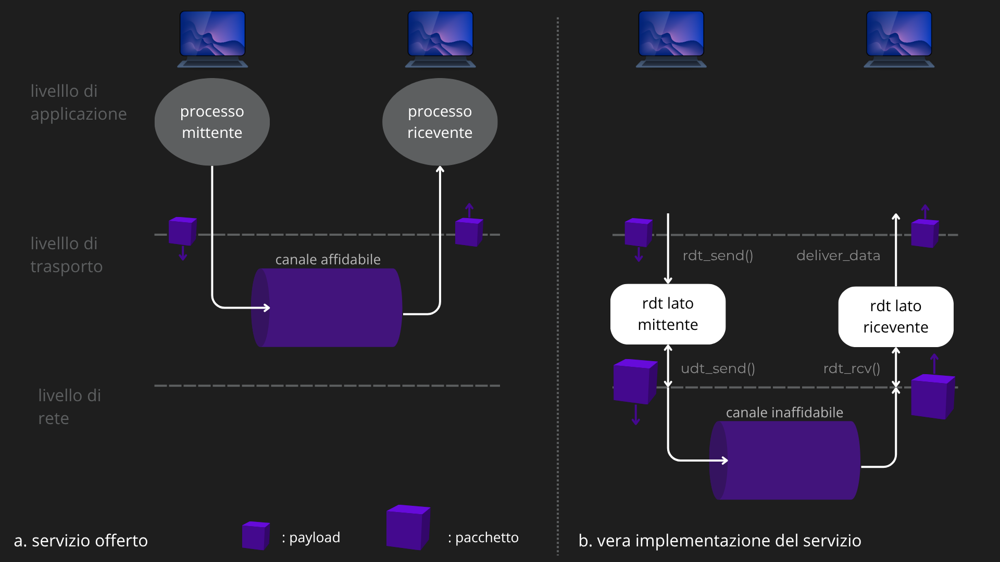
- Fase di invio (lato mittente): Il processo inizia quando l’applicazione invoca l’interfaccia
rdt_send(). A questo punto, il protocollo rdt prende in carico i dati, aggiunge i necessari meccanismi di controllo e chiama a sua volta la funzioneudt_send()(unreliable data transfer). Quest’ultima ha il compito di instradare il pacchetto verso il livello inferiore, accettando il rischio che il canale possa corromperlo o smarrirlo. - Fase di ricezione (lato ricevente): dall’altro lato della rete, quando un pacchetto giunge all’host, il livello inferiore invoca l’interfaccia
rdt_rcv(). Il protocollo rdt entra quindi in azione per verificare l’integrità del pacchetto. Se i controlli hanno esito positivo e i dati risultano corretti, il protocollo esegue la chiamata finale adeliver_data(), consegnando i dati puliti e ordinati al processo di livello superiore.
In sintesi, l’intera struttura del protocollo rdt serve a mascherare l’inaffidabilità del canale reale, trasformando una comunicazione potenzialmente caotica in un servizio affidabile per il processo applicativo del livello superiore.
COSTRUZIONE DI UN RDT
I protocolli rdt vengono costruiti in modo incrementale: si parte dal caso più semplice (canale perfetto) e si aggiungono via via meccanismi per affrontare problemi sempre più realistici. Ogni versione eredita tutto ciò che la precede e aggiunge esattamente il necessario per gestire il nuovo tipo di inaffidabilità introdotto.
N.B. Il comportamento di mittente e destinatario viene descritto tramite macchine a stati finiti (FSM): ogni cerchio rappresenta uno stato del protocollo, ogni freccia una transizione. Sopra la linea che etichetta la transizione c’è l’evento che la causa, sotto le azioni intraprese. Il simbolo indica assenza di evento o di azione. Lo stato iniziale è indicato dalla freccia tratteggiata.
rdt1.0 (canale perfettamente affidabile)
Assunzione
Il canale non corrompe né perde pacchetti. È il caso ideale e banale.
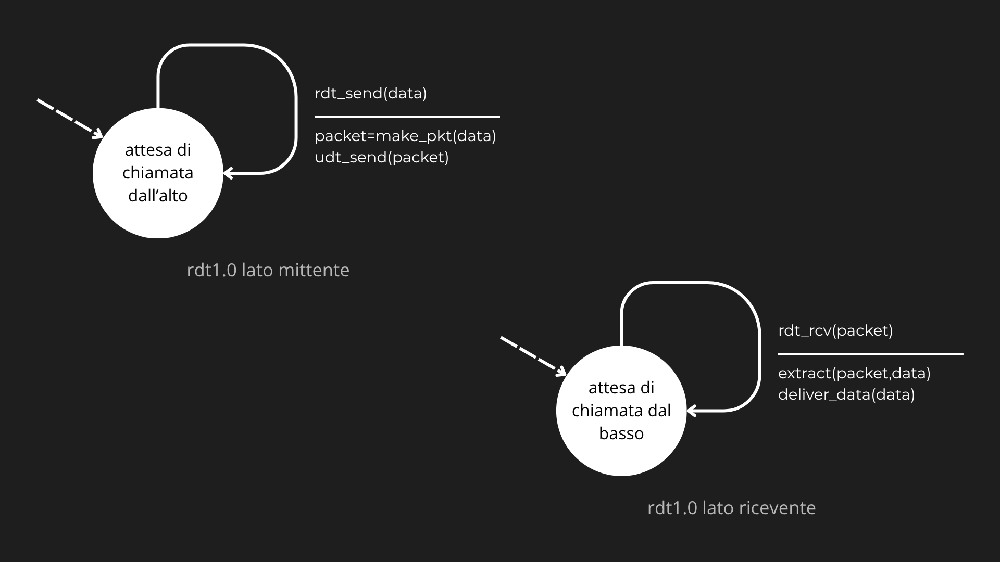
Azioni del mittente
Il mittente risiede nello stato di attesa di chiamata dall’alto. Quando l’applicazione vuole inviare dati, si verifica l’evento rdt_send(data), che innesca due azioni in sequenza: make_pkt(data) incapsula i dati in un pacchetto, udt_send(packet) lo consegna al canale sottostante (inaffidabile per definizione, ma in questo caso lo trattiamo come affidabile). Il mittente torna immediatamente nello stato di attesa.
Azioni del destinatario
Il destinatario risiede nello stato attesa di chiamata dal basso. Quando un pacchetto arriva dal canale si verifica l’evento rdt_rcv(packet), che innesca: extract(packet, data) estrae i dati dal pacchetto, deliver_data(data) li consegna al processo applicativo del livello superiore. Anche qui il destinatario torna al proprio stato di attesa.
rdt2.0 (canale con errori sui bit)
Nuovo problema
I bit del pacchetto possono essere corrotti durante la trasmissione. L’ordine di arrivo è ancora garantito (nessuna perdita).
Per gestire questo nuovo scenario si introducono tre meccanismi fondamentali, tipici dei protocolli ARQ (Automatic Repeat reQuest):
- Rilevamento dell’errore: il mittente aggiunge dei bit di controllo al pacchetto (checksum), il destinatario usa questi bit per rilevare errori.
- Feedback esplicito: il destinatario risponde con un ACK (acknowledgment positivo, “ricevuto correttamente”) o un NAK (acknowledgment negativo, “errore rilevato, ritrasmetti”).
- Ritrasmissione: alla ricezione di un NAK, il mittente rispedisce l’ultimo pacchetto.
Azioni del mittente
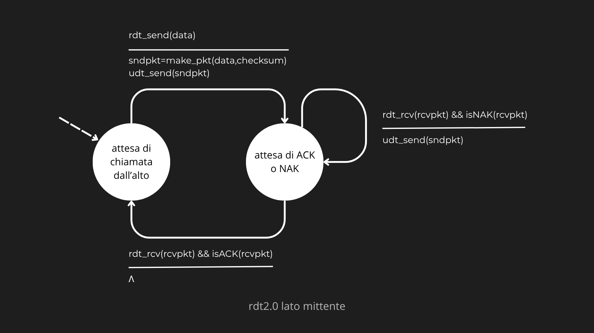
Il mittente ha ora due stati. Nel primo stato, attesa di chiamata dall’alto, alla ricezione del seguente evento: rdt_send(data), il mittente costruisce il pacchetto includendo il checksum con il comando sndpkt = make_pkt(data, checksum) e lo invia con udt_send(sndpkt).
Il sistema transita quindi nel secondo stato. Nel secondo stato, attesa di ACK o NAK, il mittente è bloccato in attesa del feedback del destinatario e non può accettare nuovi dati dall’applicazione. Questo è il comportamento detto stop-and-wait. Esistono due possibili transizioni:
- se il destinatario ha inviato un ACK, ovvero
rdt_rcv(rcvpkt) && isACK(rcvpkt), non si verifica alcuna azione (Λ) e il sistema torna al primo stato. - se il destinatario ha inviato un NAK, ovvero
rdt_rcv(rcvpkt) && isNAK(rcvpkt), il sistema ritrasmette il pacchetto e rimane nello stesso stato finché non riceve un ACK dal destinatario.
Azioni del destinatario
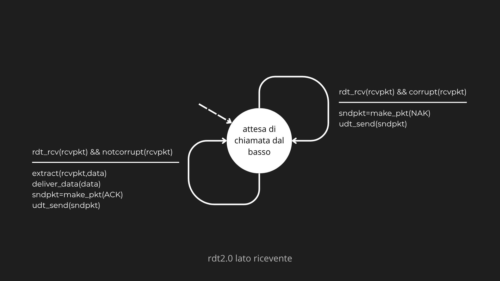
Il destinatario mantiene un solo stato, attesa di chiamata dal basso, con due possibili casi determinati dal controllo sulla corruzione del pacchetto trasmesso dal mittente:
- se il pacchetto è integro, ovvero
rdt_rcv(rcvpkt) && notcorrupt(rcvpkt), il sistema innesca una serie di comandi: estrae i dati dal pacchetto conextract(packet, data), poi li consegna al processo applicativo del livello superiore condeliver_data(data)e infine risponde con un ACK al mittente: crea l’ACKsndpkt = make_pkt(ACK)e lo inviaudt_send(sndpkt). - se il pacchetto è corrotto, ovvero
rdt_rcv(rcvpkt) && corrupt(rcvpkt), il sistema risponde con un NAK al mittente: crea l’NAKsndpkt = make_pkt(NAK)e lo inviaudt_send(sndpkt).
Warning
rdt2.0 non considera che gli stessi ACK e NAK possano essere corrotti. Se il mittente riceve un ACK/NAK incomprensibile, non sa cosa fare: non può inviare un nuovo pacchetto (potrebbe essere un NAK), né può ignorare la risposta.
rdt2.1 (gestione di ACK/NAK corrotti)
Nuovo problema
ACK e NAK possono essere corrotti.
Per risolvere il nuovo problema si aggiunge un numero di sequenza a ogni pacchetto. Per un protocollo stop-and-wait bastano 2 valori (0 e 1): il destinatario sa se il pacchetto che arriva è nuovo (numero di sequenza diverso dall’ultimo ricevuto) o è una ritrasmissione (stesso numero di sequenza). I duplicati vengono quindi riconosciuti e scartati senza essere consegnati all’applicazione. Se il destinatario:
- riceve 1 mentre aspetta 1 o riceve 0 mentre aspetta 0, è un pacchetto nuovo.
- riceve 0 mentre aspetta 1 o riceve 1 mentre aspetta 0, è un duplicato, (il mittente non ha ricevuto l’ACK precedente) quindi lo scarta e rimanda l’ACK.
Azioni del mittente
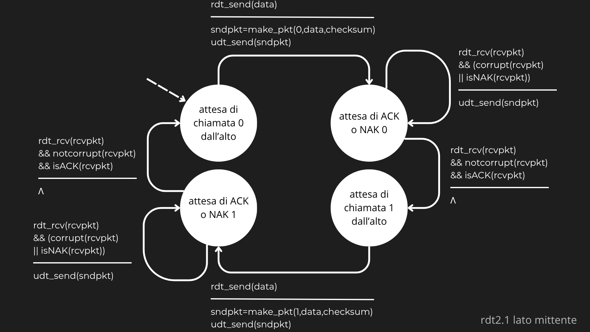
Il mittente ha ora quattro stati, organizzati in due coppie simmetriche per i numeri di sequenza 0 e 1. La prima coppia gestisce il pacchetto con sequenza 0, la seconda quella con sequenza 1. La logica è identica, cambia solo il numero di sequenza (basta analizzare una sola parte).
Nello stato attesa di chiamata 0 dall’alto, alla ricezione di rdt_send(data), il sistema aggiunge il checksum per il controllo e il numero di sequenza con sndpkt = make_pkt(0, data, checksum), per poi inviare il pacchetto con udt_send(sndpkt).
Il sistema transita quindi in attesa di ACK o NAK 0. Da qui:
- se il destinatario ha inviato un ACK, ovvero
rdt_rcv(rcvpkt) && notcorrupt(rcvpkt) && isACK(rcvpkt), non si verifica alcuna azione (Λ) e il sistema passa allo stato successivo. - se il destinatario ha inviato un NAK oppure la risposta (feedback) del destinatario è corrotta, ovvero
rdt_rcv(rcvpkt) && (corrupt(rcvpkt) || isNAK(rcvpkt)), il sistema ritrasmette il pacchetto e rimane nello stesso stato finché non riceve un ACK corretto dal destinatario.
Azioni del destinatario
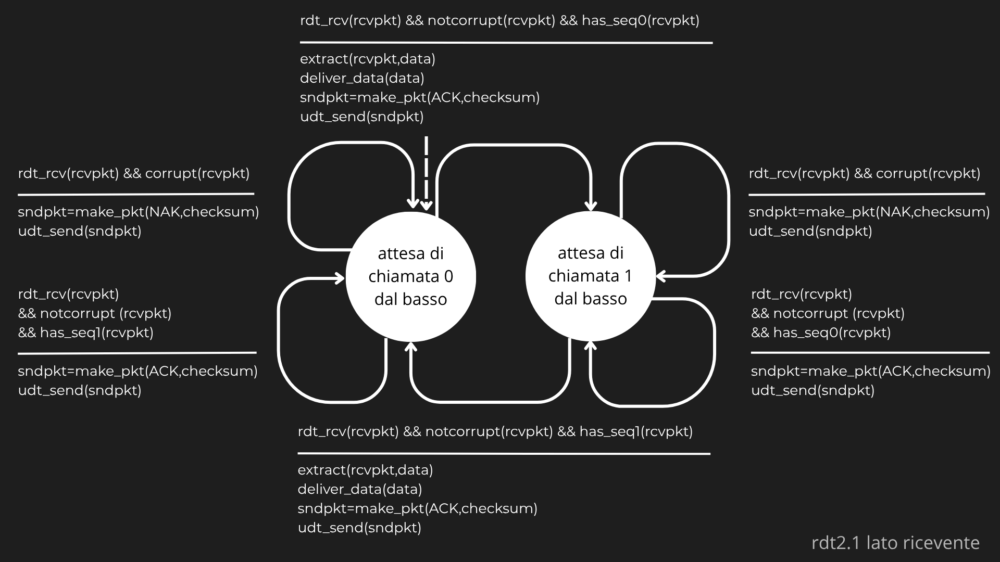
Anche il destinatario, analogamente al mittente, raddoppia gli stati: attesa di chiamata 0 dal basso e attesa di chiamata 1 dal basso.
Nello stato attesa di chiamata 0 dal basso, il destinatario:
- se riceve il pacchetto integro con il numero atteso, ovvero
rdt_rcv(rcvpkt) && notcorrupt(rcvpkt) && has_seq0(rcvpkt), estrae i dati e li consegna all’applicazione, invia un ACK al mittente e avanza allo stato successivo. - se riceve il pacchetto integro ma con il numero di sequenza sbagliato (pacchetto duplicato), ovvero
rdt_rcv(rcvpkt) && notcorrupt(rcvpkt) && has_seq1(rcvpkt), invia un ACK al mittente senza consegnare i dati (conferma ciò che aveva già ricevuto e scarta il duplicato) e rimane nello stesso stato. - se riceve il pacchetto corrotto, ovvero
rdt_rcv(rcvpkt) && corrupt(rcvpkt), invia un NAK al mittente e rimane nello stesso stato.
Lo stato attesa di chiamata 1 dal basso è speculare con has_seq1 e has_seq0 invertiti.
rdt2.2 (eliminazione dei NAK)
Obiettivo
Semplificare il protocollo eliminando i NAK mantenendo la funzionalità di rdt2.1.
Per semplificare il protocollo: invece di inviare un NAK, il destinatario invia un ACK duplicato per l’ultimo pacchetto ricevuto correttamente, includendo esplicitamente il suo numero di sequenza nell’ACK. Il mittente che riceve due ACK consecutivi per lo stesso numero di sequenza capisce che qualcosa è andato storto e ritrasmette. Rispetto a rdt2.1 cambia solo la semantica del feedback: non esiste più make_pkt(NAK).
Azioni del mittente
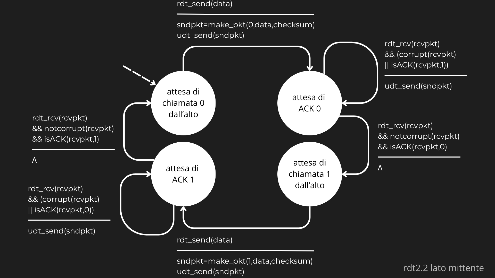
Lato mittente la struttura dei quattro stati rimane identica a rdt2.1. La differenza è nella condizione di ritrasmissione: non si controlla più isNAK(rcvpkt) ma si controlla se l’ACK ricevuto porta il numero di sequenza sbagliato (analizziamo anche qui una sola parte).
Nello stato attesa di ACK 0, il mittente:
- se il destinatario ha inviato un ACK con numero di sequenza corretto, ovvero
rdt_rcv(rcvpkt) && notcorrupt(rcvpkt) && isACK(rcvpkt, 0), non si verifica alcuna azione (Λ) e il sistema passa allo stato successivo. - se il destinatario ha inviato un ACK con numero di sequenza sbagliato, ovvero
rdt_rcv(rcvpkt) && (corrupt(rcvpkt) || isACK(rcvpkt, 1)), il sistema ritrasmette il pacchetto e rimane nello stesso stato finché non riceve un ACK corretto dal destinatario.
Azioni del destinatario
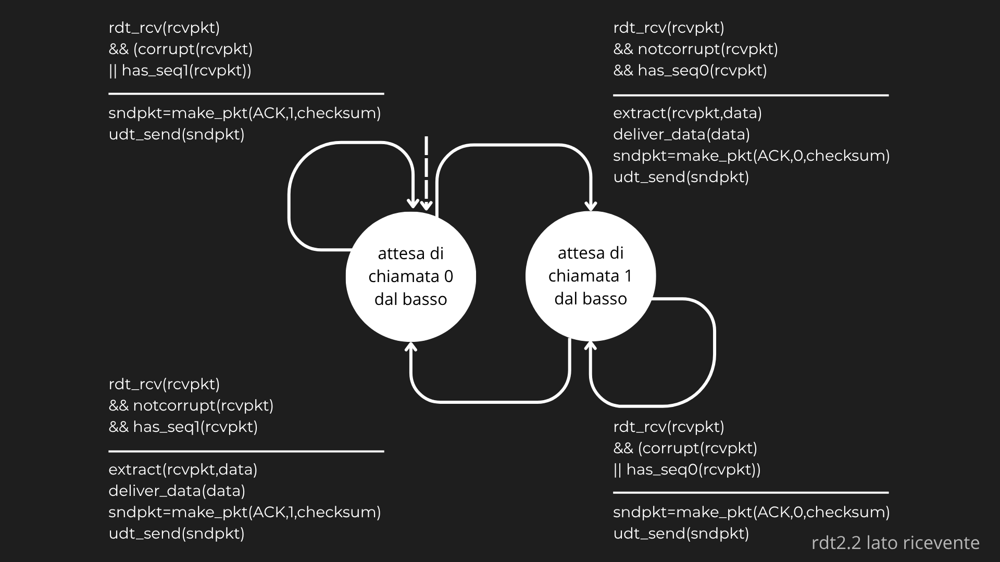
Anche per il destinatario la struttura dei due stati è analoga a rdt2.1. La differenza è che non si genera più un NAK: in caso di errore o pacchetto sbagliato si genera un ACK con il numero di sequenza dell’ultimo pacchetto correttamente ricevuto:
Nello stato attesa di chiamata 0 dal basso, il destinatario:
- se riceve il pacchetto integro con il numero atteso, ovvero
rdt_rcv(rcvpkt) && notcorrupt(rcvpkt) && has_seq0(rcvpkt), estrae i dati e li consegna all’applicazione, invia un ACK al mittente specificando il numero di sequenza consndpkt = make_pkt(ACK, 0, checksum)e avanza allo stato successivo. - se riceve il pacchetto sbagliato o con il numero di sequenza sbagliato (pacchetto duplicato), ovvero
rdt_rcv(rcvpkt) && notcorrupt(rcvpkt) && has_seq1(rcvpkt), invia un ACK al mittente specificando il numero di sequenza consndpkt = make_pkt(ACK, 1, checksum)senza consegnare i dati (conferma ciò che aveva già ricevuto e scarta il duplicato) e rimane nello stesso stato.
Lo stato attesa di chiamata 1 dal basso è speculare con has_seq1 e has_seq0 invertiti.
rdt3.0 (protocollo ad alternanza di bit)
Nuovo problema
Il canale può ora anche perdere interi pacchetti (dati o ACK). I meccanismi di rdt2.2 gestiscono la corruzione, ma non la perdita: se un pacchetto sparisce, il destinatario non riceve nulla, non invia nessun ACK, e il mittente rimarrebbe bloccato ad aspettare per sempre.
Si affida al mittente il compito di rilevare la perdita di pacchetti tramite un countdown timer. Il timer viene avviato ad ogni invio: se scade prima che arrivi un ACK valido, il mittente ritrasmette. Tre nuovi comandi entrano nelle FSM: start_timer, stop_timer e l’evento timeout. Il mittente non distingue tra le tre situazioni possibili: pacchetto perso, ACK perso e ritardo eccessivo, perché in ogni caso la risposta è: ritrasmettere. I numeri di sequenza (ereditati da rdt2.1) gestiscono automaticamente i duplicati generati da ritrasmissioni di pacchetti non persi ma solo in ritardo.
Azioni del mittente
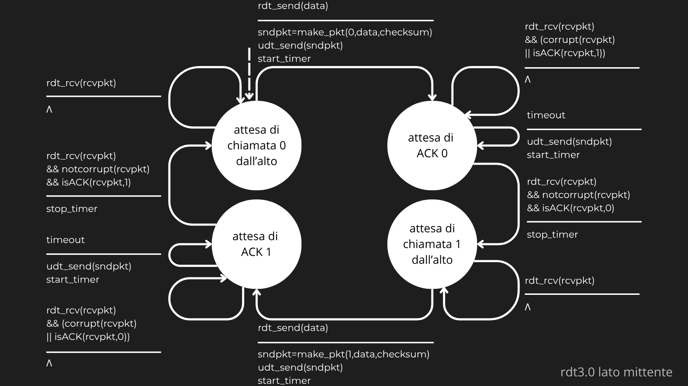
Lato mittente la struttura dei quattro stati di rdt2.2 viene mantenuta. Le differenze sono l’aggiunta di start_timer a ogni invio e la gestione dell’evento timeout in ogni stato di attesa ACK.
Nello stato attesa di chiamata 0 dall’alto:
- alla ricezione di
rdt_send(data)il sistema invia il pacchetto e avvia il timer constart_timer, quindi passa allo stato successivo. - se viene invece ricevuto un pacchetto inatteso dal livello inferiore mentre si attende (il timer è attivo), il sistema lo ignora semplicemente (
Λ) e rimane nello stesso stato.
Nello stato attesa di ACK 0 le possibili transizioni sono ora tre:
- se il destinatario ha inviato un ACK con numero di sequenza corretto, ovvero
rdt_rcv(rcvpkt) && notcorrupt(rcvpkt) && isACK(rcvpkt, 0), viene fermato il timer constop_timere il sistema avanza allo stato successivo. - se il destinatario ha inviato un ACK con numero di sequenza sbagliato o la risposta è corrotta, ovvero
rdt_rcv(rcvpkt) && (corrupt(rcvpkt) || isACK(rcvpkt, 1)), non si verifica alcuna azione (Λ) e il sistema non passa allo stato successivo e ignora la risposta. - se il timer è scaduto (non è ancora arrivato un ACK valido dal destinatario), ovvero
timeout, il sistema ritrasmette il pacchetto conudt_send(sndpkt)e riavvia il timer constart_timer.
La seconda coppia di stati (per sequenza 1) è perfettamente speculare.
Azioni del destinatario
Il destinatario di rdt3.0 è identico a quello di rdt2.2: non ha bisogno di timer perché la responsabilità di rilevare la perdita è interamente del mittente.
Esempio di funzionamento
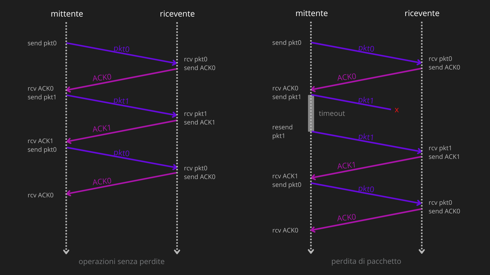
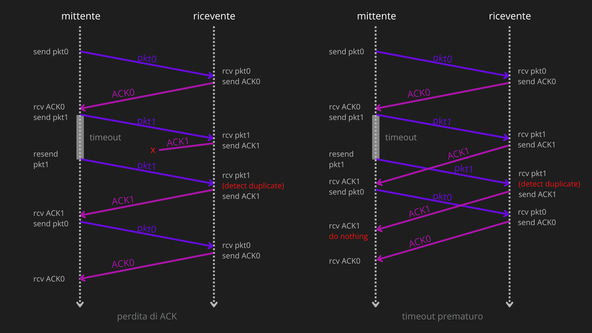
Example
Vediamo 4 scenari che potrebbero verificarsi:
- Nessuna perdita: funzionamento normale:
pkt0→ACK0→pkt1→ACK1→ …- Perdita del pacchetto dati: il destinatario non riceve nulla, non invia ACK. Il timer scade:
timeout→udt_send(sndpkt)+start_timer. Il pacchetto viene ritrasmesso.- Perdita dell’ACK: il pacchetto arriva e il destinatario invia ACK, ma quest’ultimo si perde. Il timer scade: il mittente ritrasmette. Il destinatario riceve un duplicato (stesso numero di sequenza), lo scarta con
Λe rinvia ACK. Il mittente riceve l’ACK, ferma il timer constop_timere avanza.- Timeout prematuro (ritardo): l’ACK non è perso, solo in ritardo. Il timer scade prima che arrivi: il mittente ritrasmette, genera un duplicato. Quando arriva il primo ACK (ritardato) il mittente avanza; quando arriva il secondo ACK (per il duplicato) è già in un nuovo stato e lo ignora con
Λ.
PIPELINING
Sebbene rdt3.0 sia corretto dal punto di vista funzionale, le sue prestazioni risultano del tutto inadeguate per le reti ad alta velocità moderne. Il problema risiede nel suo comportamento stop-and-wait: il mittente invia un pacchetto e rimane bloccato in attesa dell’ACK prima di poterne inviare un altro, lasciando il canale inutilizzato per la quasi totalità del tempo.
Example
Per quantificare il problema, si consideri il caso di due host collegati da un canale a , separati da un (tempo che un segnale impiega per fare andata e ritorno) di , con pacchetti di dimensione .
Immaginiamo il cronometro che parte a quando il mittente inizia a inviare: il tempo di trasmissione di un singolo pacchetto è: , quindi a l’ultimo bit del pacchetto ha lasciato il mittente.
Il pacchetto impiega (tempo di propagazione) a viaggiare fisicamente verso il destinatario. Senza considerare il tempo di elaborazione e quello di queueing (latenza totale), l’ultimo bit arriva al destinatario dopo .
Quando il destinatario riceve l’ultimo bit invia immediatamente un ACK (messaggio di conferma). L’ACK deve quindi viaggiare per altri per tornare indietro. L’ACK arriva dunque al mittente al tempo: (ovvero ).
Calcoliamo ora l’utilizzo del mittente, ovvero il rapporto tra il tempo in cui il mittente è effettivamente impegnato a trasmettere e il tempo totale del ciclo. Il tempo di utilizzo del mittente risulta quindi: (solo lo del tempo totale).
Nonostante la linea sia da , stiamo trasferendo solo ogni , ovvero circa (come avere un’ autostrada a 10 corsie e far passare un’auto ogni mezz’ora, lascia proprio stare bro, datti al golf).
La soluzione è concettualmente semplice: invece di attendere l’ACK dopo ogni pacchetto, si consente al mittente di inviare più pacchetti consecutivi senza attendere i riscontri: il pipelining.
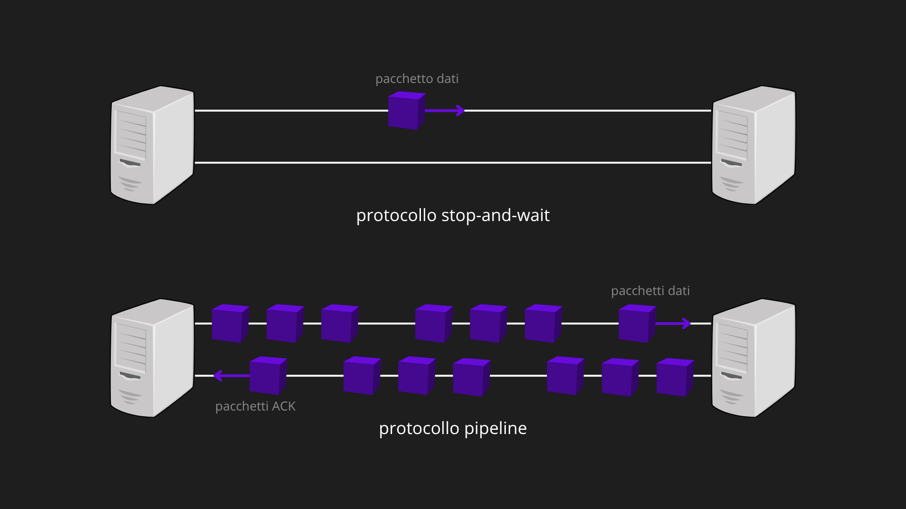
Ad esempio, con 3 pacchetti in pipeline l’utilizzo si triplica. In generale, la percentuale di utilizzo scala linearmente con il numero di pacchetti che il mittente può avere in volo allo stesso tempo. Il pipelining introduce però tre requisiti fondamentali rispetto ai protocolli stop-and-wait:
- Intervallo di numeri di sequenza più ampio: poiché più pacchetti sono in transito simultaneamente, ciascuno deve avere un numero di sequenza univoco. Con un solo bit (come in rdt3.0) non è più sufficiente.
- Buffer lato mittente: il mittente deve conservare in memoria i pacchetti trasmessi ma non ancora riscontrati, per poterli ritrasmettere in caso di errore.
- Buffer lato destinatario (in alcuni protocolli): il destinatario potrebbe dover memorizzare pacchetti ricevuti fuori ordine in attesa di quelli mancanti.
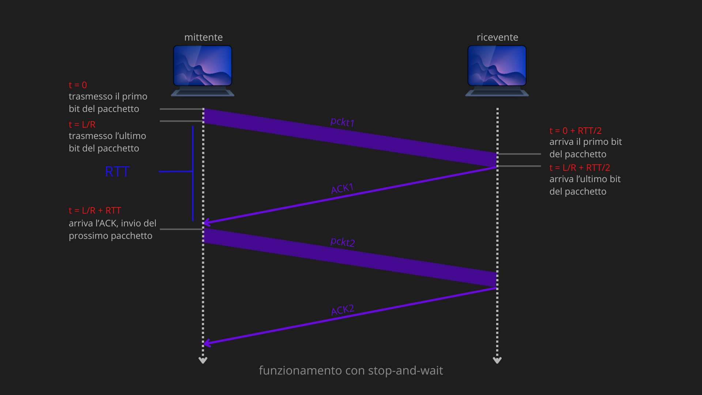
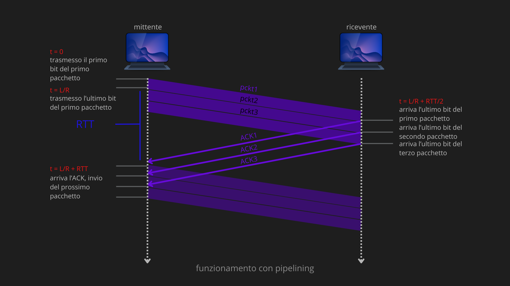
Esistono due approcci principali per gestire gli errori in un contesto di pipelining: Go-Back-N e Ripetizione Selettiva.
Go-Back-N (GBN)
Invece di inviare un pacchetto e fermarsi (come nel protocollo stop-and-wait), il mittente può inviare fino a N pacchetti consecutivi senza aver ancora ricevuto conferma (ACK). Il limite massimo di pacchetti in volo N viene anche detto ampiezza della finestra (window size).
Perché limitare la dimensione della finestra?
Serve a non sovraccaricare il ricevente (controllo di flusso) e a non intasare la rete (controllo di congestione).
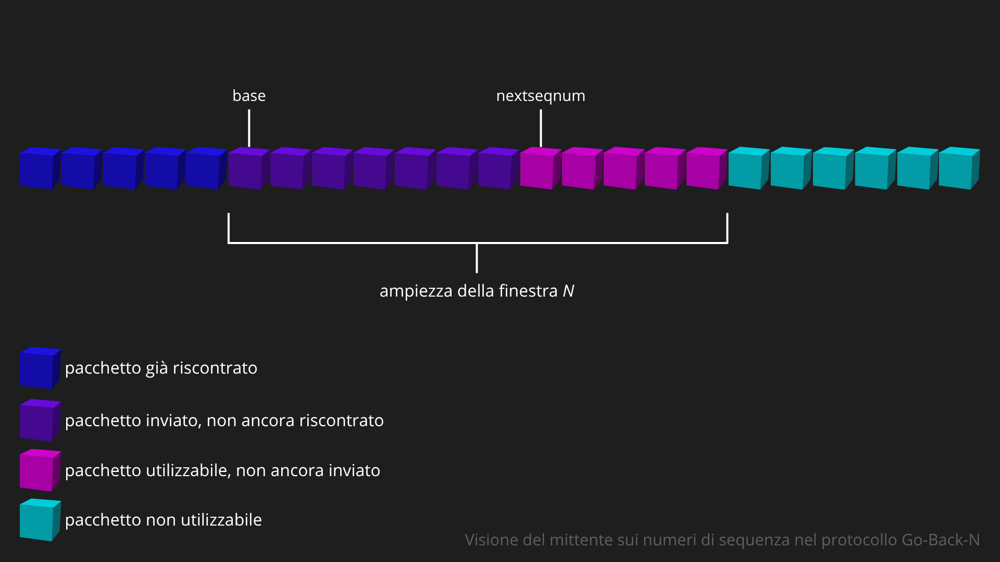
Il mittente visualizza i suoi pacchetti divisi in quattro categorie, basandosi su due variabili: base (il più vecchio non ancora confermato con un ACK) e nextseqnum (il prossimo da inviare):
- [0, base - 1]: pacchetti già trasmessi e riscontrati.
- [base, nextseqnum - 1]: pacchetti trasmessi ma privi di ACK.
- [nextseqnum, base + N - 1]: numeri di sequenza disponibili per nuovi pacchetti.
- [base + N, …]: numeri non ancora utilizzabili.
La finestra di ampiezza N scorre verso destra man mano che arrivano i riscontri: per questo GBN è detto anche protocollo a finestra scorrevole (sliding-window protocol). Poiché l’intestazione di un pacchetto ha uno spazio limitato (campo di bit), non possiamo avere infiniti numeri di sequenza.
- L’intervallo dei numeri di sequenza utilizzabili va da a .
- Dopo il numero , il conteggio ricomincia da (ciclicità).
- Esempio: se si hanno 3 bit, i numeri sono e poi di nuovo .
Nello specifico, per far sì che il protocollo funzioni correttamente senza confondere i pacchetti di una vecchia finestra con quelli di una nuova, deve valere la relazione: .
Azioni del mittente
La FSM del mittente GBN è una FSM con uno stato di attesa e quattro tipi di eventi. Mantiene due variabili: expectedseqnum ovvero il numero di sequenza del prossimo pacchetto atteso in ordine, e base ovvero il numero di sequenza del primo della serie di pacchetti inviati ancora in volo.
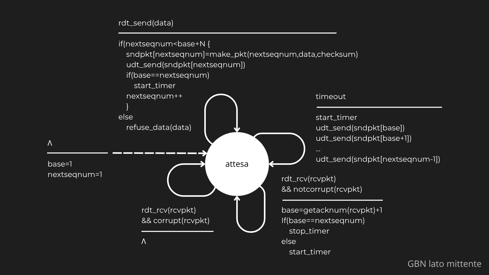
- Quando
rdt_send(data)viene chiamata dall’applicazione: se la finestra non è piena (nextseqnum < base + N) il pacchetto viene creato e inviato. Se è il primo pacchetto in volo (base == nextseqnum) allora viene anche avviato il timer constart_timer. Se la finestra è piena (else) i dati vengono rifiutati e restituiti al livello superiore conrefuse_data(data). Ovviamente, una volta inviato un pacchetto, il sistema passa al successivo connextseqnum++. - Se viene ricevuto un ACK, ovvero
rdt_rcv(rcvpkt) && notcorrupt(rcvpkt): l’ACK del pacchetto con il numero di sequenza verrà considerato un acknowledgment cumulativo (cumulative acknowledgment), che indica che tutti i pacchetti con un numero di sequenza minore o uguale a sono stati correttamente ricevuti dal destinatario. La finestra viene spostata in avanti conbase = getacknum(rcvpkt) + 1. A questo punto se il numero di sequenza base corrisponde con nextseqnum (primo dei pacchetti non in volo), allora il sistema capisce che non ci sono più pacchetti in volo e blocca il timer (non serve più monitorare nulla). Altrimenti il sistema riavvia il timer per proteggere i pacchetti in volo. - Se il timer scade, ovvero
timeout: il mittente ritrasmette tutti i pacchetti in volo, ovvero tutti quelli nell’intervallo [base, nextseqnum - 1]. Il nome Go-Back-N deriva esattamente da questo comportamento: in caso di errore si torna indietro di N posizioni e si ritrasmette tutto. - Se arriva un ACK con errori, ovvero
rdt_rcv(rcvpkt) && corrupt(rcvpkt): l’ACK viene ignorato (Λ) semplicemente. Infatti, poiché gli ACK sono cumulativi, l’eventuale perdita di informazione causata da un ACK corrotto verrà sanata o da un ACK successivo valido o dalla ritrasmissione dell’intera finestra allo scadere del timer, garantendo l’integrità dei dati senza aggiungere logica complessa.
Azioni del destinatario
Il destinatario GBN è notevolmente più semplice del mittente e ha anch’esso un solo stato. Mantiene una sola variabile: expectedseqnum, il numero di sequenza del prossimo pacchetto atteso in ordine.
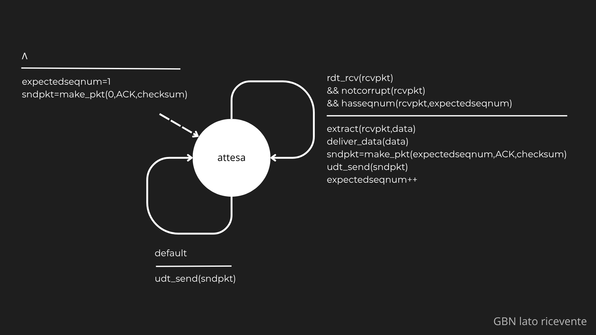
- Nel caso in cui il pacchetto ricevuto sia integro
rdt_rcv(rcvpkt) && notcorrupt(rcvpkt)e in ordinehasseqnum(rcvpkt, expectedseqnum), allora il pacchetto viene estratto e consegnato all’applicazione. Poi il destinatario consegna l’ACK al mittente e incrementa il valore del numero di sequenza del prossimo pacchetto attesoexpectedseqnum++. - In qualsiasi altro caso (
default) il destinatario scarta il pacchetto e rimanda l’ACK dell’ultimo pacchetto in ordine ricevuto correttamente.
N.B. Il destinatario GBN non effettua buffering: la scelta è giustificata dal fatto che, se un pacchetto viene perso, GBN lo ritrasmette comunque insieme a tutti i successivi: conservarlo nel buffer non porterebbe alcun vantaggio netto, a fronte di una maggiore complessità implementativa.
Esempio di funzionamento
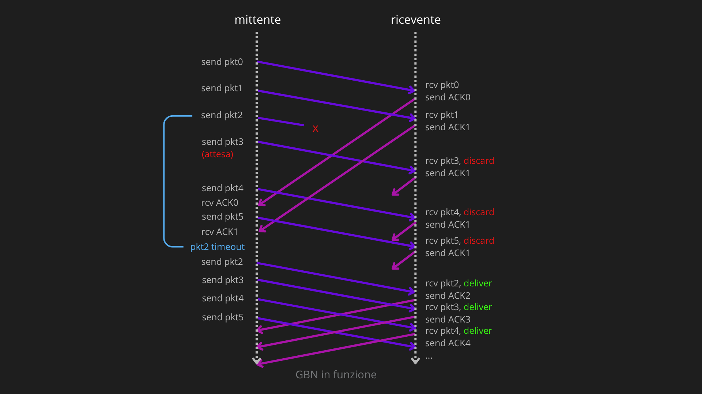
Example
Con finestra , il mittente invia pkt0, pkt1, pkt2, pkt3. Il pacchetto pkt2 va perso. Il destinatario riceve correttamente pkt0 e pkt1 (invia ACK0, ACK1), ma scarta pkt3, pkt4 e pkt5 perché fuori sequenza, rimandando ogni volta ACK1. Quando scade il timer per pkt2, il mittente ritrasmette pkt2, pkt3, pkt4, pkt5. Questa volta il destinatario li riceve in ordine e li consegna tutti.
Ripetizione Selettiva (SR)
Warning
GBN funziona bene quando gli errori sono rari, ma diventa inefficiente in canali con alta probabilità di errore: un singolo pacchetto perso causa la ritrasmissione di tutti i successivi nella finestra, saturando il canale con traffico inutile. La Ripetizione Selettiva risolve questo problema ritrasmettendo solo i pacchetti specificamente persi o corrotti.
La Ripetizione Selettiva (SR, Selective Repeat) risolve questo problema in modo chirurgico: il mittente ritrasmette esclusivamente i pacchetti per cui vi è ragione di sospettare una perdita o una corruzione, ovvero quelli il cui ACK non è arrivato entro il timeout individuale. Per rendere ciò possibile, il destinatario deve inviare ACK selettivi e individuali per ogni pacchetto ricevuto correttamente, e non più ACK cumulativi come in GBN. Si mantiene una finestra di ampiezza N anche in SR, ma il suo significato è più articolato: all’interno della stessa finestra del mittente possono coesistere pacchetti già riscontrati e pacchetti ancora in attesa di ACK. A differenza di GBN, in SR anche il destinatario mantiene una finestra di ricezione di ampiezza N, che gli consente di accettare e bufferizzare pacchetti fuori ordine in attesa di quelli mancanti.
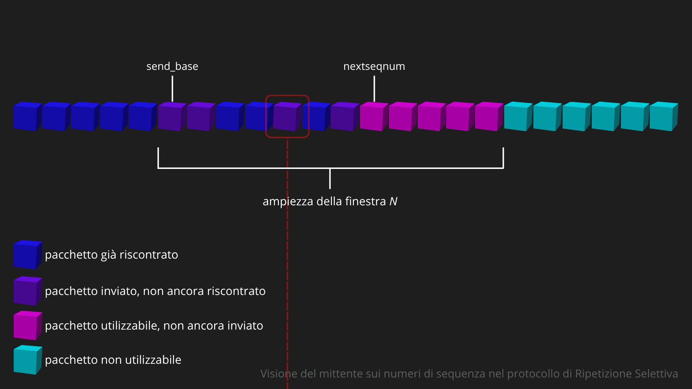
Finestra del mittente: è centrata su send_base, il numero di sequenza del pacchetto più vecchio non ancora riscontrato. La finestra si estende fino a send_base + N − 1. Al suo interno coesistono pacchetti già riscontrati (marcati come ricevuti, ma la finestra non può avanzare finché send_base non è riscontrato), pacchetti inviati e in attesa di ACK, e numeri di sequenza disponibili per nuovi invii.
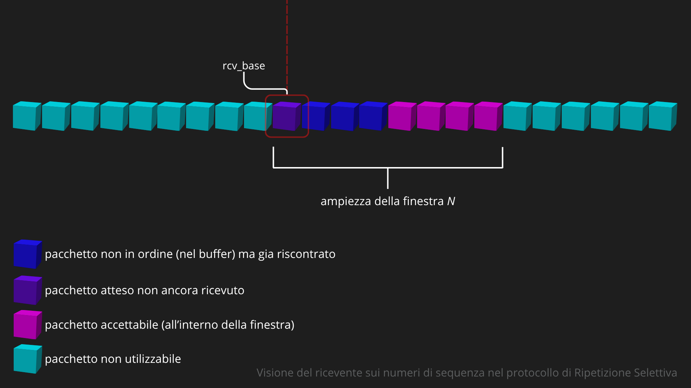
Finestra del destinatario: è centrata su rcv_base, il numero di sequenza del prossimo pacchetto atteso in ordine. Si estende fino a rcv_base + N − 1. I pacchetti che rientrano in questa finestra e vengono ricevuti correttamente vengono bufferizzati. Quelli al di fuori vengono ignorati (con l’eccezione del caso 2 descritto più avanti). La finestra avanza solo quando viene ricevuto il pacchetto con numero di sequenza uguale a rcv_base.
Attention
Una differenza fondamentale rispetto a GBN è che le finestre di mittente e destinatario non sempre coincidono: il destinatario può aver già riscontrato pacchetti che il mittente considera ancora in sospeso (perché il relativo ACK si è perso). Questa asimmetria ha implicazioni importanti, discusse nel paragrafo sul dilemma SR.
Azioni del mittente
Il mittente SR risponde a tre tipi di eventi:
- Dati ricevuti dall’alto: Quando l’applicazione chiama
rdt_send(), il mittente controlla il prossimo numero di sequenza disponibile. Se ricade all’interno della finestra (ovvero se nextseqnum < send_base + N), il pacchetto viene impacchettato, inviato e il suo timer individuale avviato. Se la finestra è piena, i dati vengono bufferizzati o restituiti al livello superiore per un tentativo successivo, esattamente come in GBN. - Timeout individuale: La differenza cruciale rispetto a GBN è che ogni pacchetto dispone del proprio timer logico indipendente (implementabile con un unico timer hardware tramite tecniche apposite). Allo scadere del timeout relativo al pacchetto , viene ritrasmesso solo il pacchetto e il suo timer viene riavviato. Non si tocca nessun altro pacchetto.
- Ricezione di un ACK: Quando viene ricevuto l’ACK di un pacchetto , se il numero di sequenza ricade nella finestra corrente [send_base, send_base + N - 1], il pacchetto viene marcato come ricevuto. Se coincide esattamente con send_base (il pacchetto più vecchio non ancora riscontrato), la finestra avanza fino al successivo pacchetto non ancora riscontrato. Se lo spostamento della finestra porta in vista nuovi numeri di sequenza non ancora trasmessi, i relativi pacchetti vengono immediatamente inviati.
Azioni del destinatario
Il destinatario SR distingue tre casi in base al numero di sequenza del pacchetto ricevuto:
- Pacchetto in [rcv_base, rcv_base + N - 1] (all’interno della finestra): Il pacchetto è accettabile. Viene inviato immediatamente un ACK selettivo al mittente. Se il pacchetto non era già stato ricevuto in precedenza, viene inserito nel buffer. Se il numero di sequenza coincide con rcv_base (ovvero è arrivato il pacchetto atteso in ordine), si innesca la consegna in blocco al livello superiore: il pacchetto corrente e tutti i pacchetti consecutivi già presenti nel buffer vengono consegnati insieme, e la finestra avanza al successivo pacchetto non ancora ricevuto.
- Pacchetto in [rcv_base - N, rcv_base - 1] (già ricevuto e riscontrato, ma al di sotto della finestra corrente). Questo caso può verificarsi quando un ACK precedente si è perso: il mittente, non avendo ricevuto conferma, ritrasmette un pacchetto che il destinatario ha già consegnato. Il destinatario deve generare nuovamente l’ACK per questo pacchetto, anche se i dati vengono ignorati. Senza questo re-ACK, la finestra del mittente non potrebbe avanzare, bloccando indefinitamente la trasmissione.
- Qualsiasi altro caso. Il pacchetto viene ignorato silenziosamente.
Esempio di funzionamento
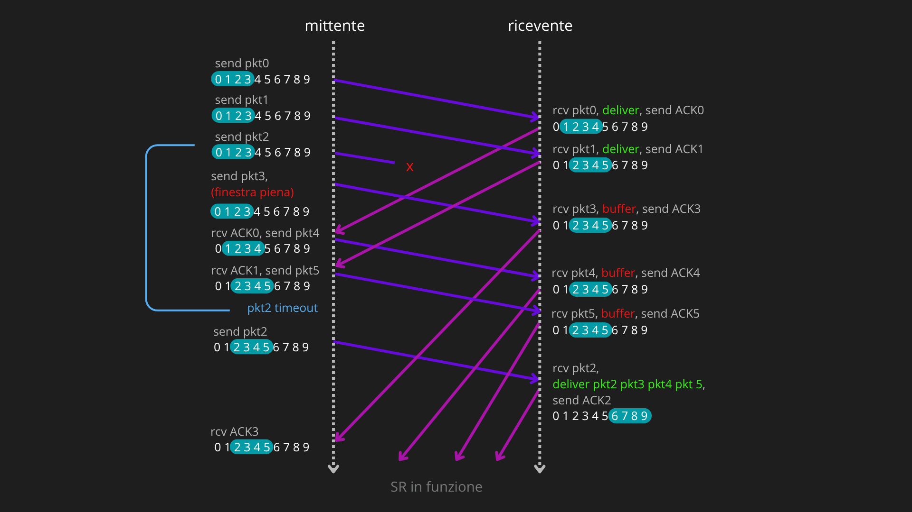
Si consideri una trasmissione con finestra . Il mittente invia in sequenza pkt0, pkt1, pkt2, pkt3. Il pacchetto pkt2 si perde durante la trasmissione. Il destinatario riceve correttamente pkt0 e pkt1, li consegna al livello superiore e invia ACK0 e ACK1. Successivamente riceve pkt3, pkt4 e pkt5 che, pur essendo fuori ordine (è stato perso pkt2), vengono bufferizzati e riscontrati individualmente con ACK3, ACK4, ACK5 (comportamento radicalmente diverso da GBN, dove sarebbero stati scartati). Il mittente, ricevendo ACK0 e ACK1, fa avanzare la propria finestra e invia pkt4 e pkt5. Quando scade il solo timer di pkt2, il mittente ritrasmette esclusivamente pkt2. Il destinatario lo riceve, lo riconosce comercv_base corrente, e può finalmente consegnare in blocco pkt2, pkt3, pkt4, pkt5 al livello superiore, facendo avanzare la finestra di ricezione di quattro posizioni. Il mittente riceve ACK2 e avanza la propria finestra di conseguenza.
Warning
Il problema dell’ambiguità nel protocollo Selective Repeat (SR) scaturisce dalla natura ciclica dei numeri di sequenza, i quali sono limitati dal numero di bit () disponibili nell’header del pacchetto. Poiché lo spazio di numerazione totale è pari a , i numeri vengono inevitabilmente riutilizzati secondo un’aritmetica modulare.
L’ambiguità si manifesta quando la dimensione della finestra di ricezione è eccessiva rispetto allo spazio di numerazione. In tale scenario, il destinatario non è in grado di distinguere se un pacchetto ricevuto con un determinato numero di sequenza (ad esempio, lo “0”) rappresenti:
- Una ritrasmissione di un pacchetto precedente, inviata dal mittente a causa della perdita dei relativi messaggi di conferma (ACK).
- Un nuovo pacchetto appartenente al ciclo di numerazione successivo, inviato dal mittente dopo che la finestra è avanzata.
Dal punto di vista del destinatario, i due eventi sono indistinguibili poiché il numero di sequenza è identico. Qualora il destinatario accettasse erroneamente una ritrasmissione come un nuovo dato, si verificherebbe una corruzione del flusso informativo consegnato al livello superiore.
Per garantire la correttezza del protocollo, è necessaria una condizione di sicurezza che imponga un limite alla dimensione della finestra: .
Tale vincolo assicura che la finestra del mittente e quella del destinatario non si sovrappongano mai in modo ambiguo. In termini formali, limitando la finestra alla metà dello spazio di numerazione, si garantisce che i numeri di sequenza attualmente attesi dal destinatario siano matematicamente disgiunti da quelli che il mittente potrebbe ancora ritrasmettere, eliminando alla radice ogni possibilità di errore.